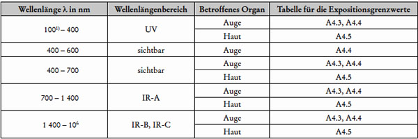
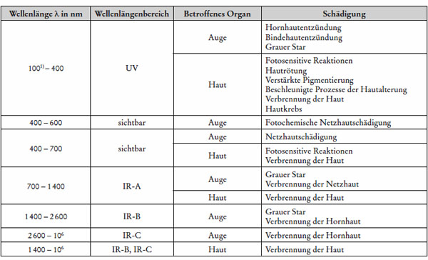
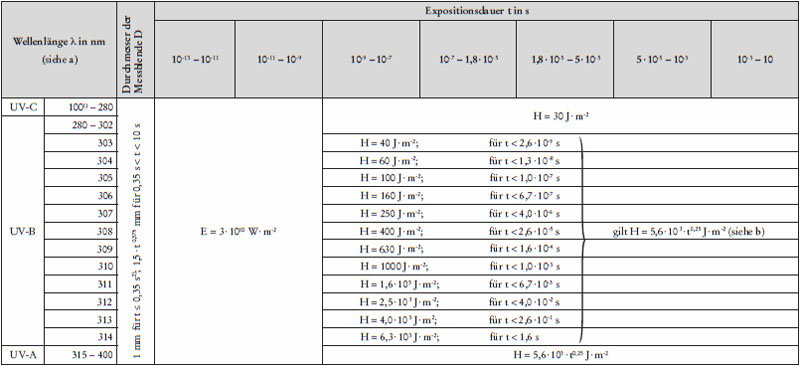
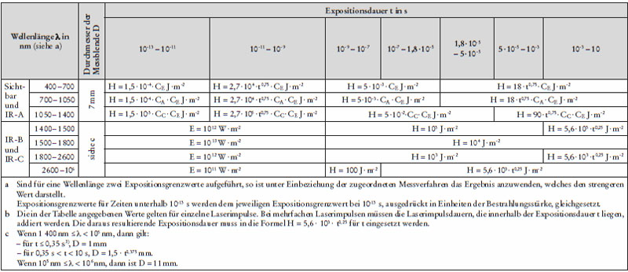
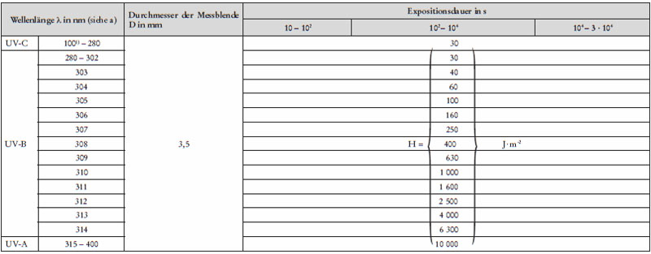
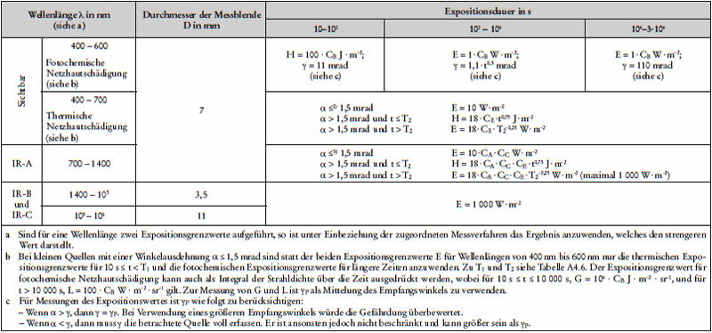
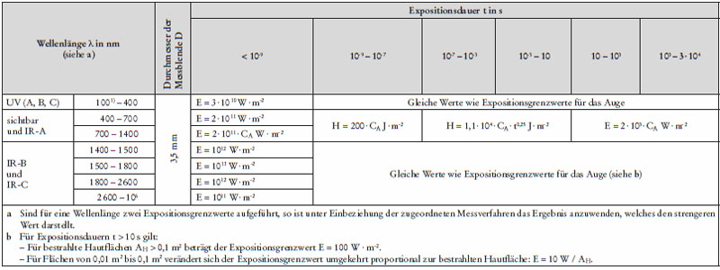
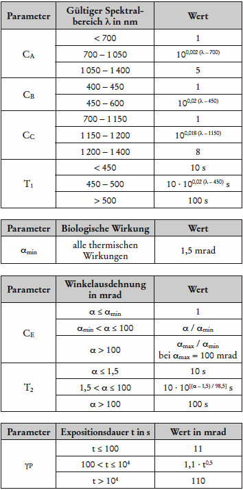
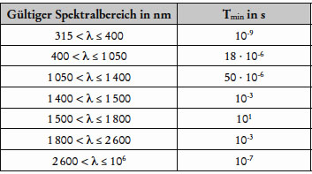

(1) Die biophysikalisch relevanten Expositionswerte für Laserstrahlung lassen sich anhand der nachstehenden Formeln bestimmen. Welche Formel zu verwenden ist, hängt von der Wellenlänge und der Expositionsdauer ab. Die Ergebnisse sind mit den entsprechenden Expositionsgrenzwerten1) (EGW) der Tabellen A4.3 bis A4.5 zu vergleichen. Für die jeweilige Laserstrahlenquelle können mehrere Expositionsgrenzwerte relevant sein.
(2) Die in den Tabellen A4.3 bis A4.5 als Berechnungsfaktoren verwendeten Koeffizienten sind in Tabelle A4.6, die Korrekturfaktoren für wiederholte Exposition sind in Tabelle A4.7 aufgeführt.

| P | Leistung, ausgedrückt in Watt (W); |
| A | Fläche, ausgedrückt in Quadratmeter (m2); |
| E, E(t | Bestrahlungsstärke oder Leistungsdichte: die auf eine Fläche einfallende Strahlungsleistung je Flächeneinheit, ausgedrückt in Watt pro Quadratmeter (W ⋅ m-2); die Werte E und E(t) werden aus Messungen gewonnen oder können vom Hersteller der Arbeitsmittel angegeben werden; |
| H | Bestrahlung: das Integral der Bestrahlungsstärke über die Zeit, ausgedrückt in Joule pro Quadratmeter (J ⋅ m-2); |
| t | Zeit, Expositionsdauer: Δt = t2 - t1, ausgedrückt in Sekunden (s); |
| λ | Wellenlänge, ausgedrückt in Nanometern (nm); |
| γ | Empfangswinkel: der ebene Winkel innerhalb dessen ein Empfänger auf optische Strahlung anspricht, auch Gesichtsfeld genannt, ausgedrückt in Milliradiant (mrad); |
| γP | Grenz-Empfangswinkel, ausgedrückt in Milliradiant (mrad); |
| D | Durchmesser der Messblende; die Messblende ist die kreisförmige Fläche mit dem Durchmesser D, über die Bestrahlungsstärke und Bestrahlung gemittelt werden; |
| α | Winkelausdehnung einer Quelle, ausgedrückt in Milliradiant (mrad); |
| L, L(t) | Strahldichte der Quelle, ausgedrückt in Watt pro Quadratmeter pro Steradiant (W ⋅ m-2 ⋅ sr-1); |
| G | integrierte Strahldichte: das Integral der Strahldichte über eine bestimmte Expositionsdauer, ausgedrückt in Joule pro Quadratmeter pro Steradiant (J ⋅ m-2 ⋅ sr-1); Strahlungsenergie je Flächeneinheit einer Abstrahlfläche je Einheitsraumwinkel der Emission. |
Tab. A4.1 Zuordnung der Tabellen für die Expositionsgrenzwerte zu den Wellenlängenbereichen

Tab. A4.2 Akute und Langzeitwirkungen von Laserstrahlung

Tab. A4.3 Expositionsgrenzwerte für die Einwirkung von Laserstrahlung auf das Auge, kurze Expositionsdauer (t < 10 s)


| 1) | Nach § 2 „Begriffsbestimmungen“ der OStrV ist der Wellenlängenbereich der optischen Strahlung auf 100 nm bis 1 mm festgelegt. |
| 2) | Der Anfangspunkt der Funktion wurde − zur sicheren Seite hin − von 0,3 s auf 0,35 s verschoben, um eine bessere Anpassung zwischen variabler und fester Messblende zu erreichen. Zur Vereinfachung kann ein Durchmesser der Messblende von 1 mm verwendet werden. |
| 3) | Der Anfangspunkt der Funktion wurde − zur sicheren Seite hin − von 0,3 s auf 0,35 s verschoben, um eine bessere Anpassung zwischen variabler und fester Grenzblende zu erreichen. |
Tab. A4.4 Expositionsgrenzwerte für die Exposition des Auges durch Laserstrahlung, lange Expositionsdauer (t ≥ 10 s)


| 1) | Nach § 2 „Begriffsbestimmungen“ der OStrV ist der Wellenlängenbereich der optischen Strahlung auf 100 nm bis 1 mm festgelegt. |
| 2) | redaktionelle Änderung |
| 3) | redaktionelle Änderung |
Tab. A4.5 Expositionsgrenzwerte für die Exposition der Haut durch Laserstrahlung

1) Nach § 2 „Begriffsbestimmungen“ der OStrV ist der Wellenlängenbereich der optischen Strahlung auf 100 nm bis 1 mm festgelegt.
Tab. A4.6 Korrekturfaktoren und sonstige Berechnungsparameter

Hinweis:
Die Parameter CE und T2 gelten nur für den Wellenlängenbereich 400 nm < λ ≤ 1 400 nm.
Tab. A4.7 Korrektur bei wiederholter Exposition (Impulsfolgen)

(3) Jede der drei folgenden Regeln ist bei allen Expositionen anzuwenden, die bei wiederholt gepulster oder modulierter Laserstrahlung auftreten. Der restriktivste Wert, der sich im Vergleich mit den Strahlungsdaten, ermittelt nach der jeweiligen Messbedingung, ergibt, ist auszuwählen.
(4) Um zu prüfen, ob bei einer vorgegebenen Wiederholfrequenz Impulse zusammen zu fassen sind, kann der zeitliche Abstand ΔT zwischen zwei Impulsen wie folgt aus der Impulswiederholfrequenz fP des Lasers berechnet werden:
| ΔT = 1⁄fP | Gl. A4.1 |
(5) Zum Vergleich kann der Wert für Tmin aus Tabelle A4.7 entnommen werden.
Beispiel:
Hat man Impulse mit einer Impulsdauer kleiner als 18 μs (gilt für 400 nm bis 1 050 nm), so können diese zu Impulsen T = 18 μs zusammengefasst werden. Es ergibt sich dann die neue Impulszahl N bei einer Zeitbasis von 100 s (18 μs, 100 s Zeitbasis)
| N = 100 s⁄18⋅10-6s = 5500000 | Gl. A4.2 |
Hinweis 13):
Impulse im Sinne dieser Anlage sind Impulse mit den Impulsdauern von ≤ 0,25 s.
Hinweis 24):
Die maximale Zeit T, für die die Impulszahl N ermittelt werden muss, ist für
| 315 nm < λ ≤ 400 nm: | 30 000 s, oder die anzuwendende Expositionsdauer, falls diese kürzer ist; |
| 400 nm < λ ≤ 1 400 nm: | T2 (Tabelle A4.6) oder die anzuwendende Expositionsdauer, falls diese kürzer ist; |
| λ > 1 400 nm: | 10 s. |
Hinweis 35):
Bei sehr großen zu berücksichtigenden Impulszahlen kann es vorkommen, dass der berechnete Expositionsgrenzwert bezogen auf die Impuls(spitzen)leistung kleiner ist als der Expositionsgrenzwert für kontinuierliche Strahlung. In solchen Fällen gilt der Expositionsgrenzwert für kontinuierliche Strahlung.
Um die Einhaltung der Expositionsgrenzwerte insbesondere für die Bestimmung der Laser-Schutz- und Laser-Justierbrillen schnell überprüfen zu können, kann folgende Tabelle, die zur sicheren Seite hin vereinfachte Grenzwerte benutzt, für viele Fälle verwendet werden.
Tab. A4.8 Vereinfachte maximal zulässige Bestrahlungswerte auf der Hornhaut des Auges
| Wellenlängen- bereich in nm |
Bestrahlungsstärke E | Bestrahlung H | ||||||
| D* | M** | M | I***, R**** | |||||
| Impuls- dauer in s |
E / W ⋅ m-2 | Impuls- dauer in s |
E / W ⋅ m-2 | Impuls- dauer in s |
H / J ⋅ m-2 | Impuls- dauer in s |
H / J ⋅ m-2 | |
| 100 ≤ λ < 315 | 30 000 | 0,001 | < 10-9 | 3·1010 | — | — | > 10-9 bis 3·104 | 30 |
| 315 ≤ λ < 1 400 | > 5·10-4 bis 10 | 10 | — | — | < 10-9 | 1,5·10-4 | > 10-9 bis 5·10-4 | 0,005 |
| 1 400 ≤ λ ≤ 106 | > 0,1 bis 10 | 1 000 | < 10-9 | 1011 | — | — | > 10-9 bis 0,1 | 100 |
| * | Dauerstrich (konstante Leistung über mindenstens 0,25 s) |
| ** | Modengekoppelt (Emission in Impulsen, die kleiner als 10-7 s und länger als 1 ns sind) |
| *** | Impuls (Emissionen die kürzer als 0,25 s und länger als 10-7 s sind) |
| **** | Riesenimpuls (Emission in Impulsen, die kürzer als 10-7 s und länger als 1 ns sind) |
Hinweis:
In dieser vereinfachten Tabelle wird Strahlung von Impulslasern nur bis 0,1 s als Impulslaserstrahlung betrachtet. Laserstrahlung ab 0,1 s wird als Dauerstrich-Strahlung betrachtet.
| 1) | Grenzwerte für die Einwirkung von Laserstrahlung auf Personen sind als Expositionsgrenzwerte festgelegt. |
| 2) | Nach § 2 „Begriffsbestimmungen“ der OStrV ist der Wellenlängenbereich der optischen Strahlung auf 100 nm bis 1 mm festgelegt. |
| 3) | Die maximale Impulsdauer ist bereits in den Begriffsbestimmungen (Teil „Allgemeines“) beschrieben. Bei der Anwendung der Formel ist diese Einschränkung wichtig. |
| 4) | Die Zeitobergrenze T ist die Zeit der Einwirkung, ab der die Expositionsgrenzwerte in Leistung bzw. Bestrahlung ausgedrückt werden und sich mit zunehmender Expositionsdauer nicht mehr verschärfen. |
| 5) | Dieses Kriterium bewirkt, dass der Expositionsgrenzwert für einen Laserimpuls unter die Leistung fallen würde, die für einen Dauerstrichlaser für die kontinuierliche Strahlung gelten würde. |